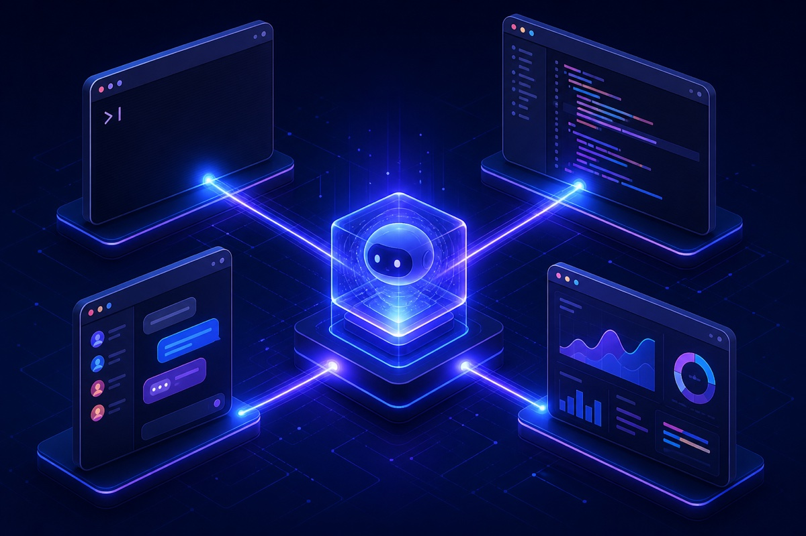

에이전트 네이티브 소프트웨어 개발 플랫폼 Factory와 핵심 제품 Droid의 기능, 보안 체계, 가격 대비 효율성(ROI)을 조사·검증한 결과를 요약합니다.
조사 기준일 2026-09-22출처 Factory 공식 문서·Trust Center, TechCrunch/WSJ, Anthropic 고객 사례, 제3자 가격 분석
01 · Executive Summary
한 줄 요약
핵심 결론
Factory는 기업용 "에이전트 네이티브 소프트웨어 개발 플랫폼"으로, 핵심 제품 Droid(AI 코딩 에이전트)가 기획부터 구현·테스트·코드리뷰·배포까지 전체 개발 주기를 자동화합니다. 2026년 9월 기준 기업가치 $5B(약 7조 원)로 급성장 중이며, SOC 2 · ISO 42001 인증과 완전 폐쇄망(airgap) 배치까지 지원하는 보안 구색은 동종 업계 최상위권입니다. 조사 범위 내 공개된 침해사고나 CVE는 발견되지 않았습니다.
$5B
기업가치 (2026년 9월, WSJ) 5개월 만에 3.3배 상승
55만 시간
고객 누적 개발 시간 절감 (Anthropic 사례연구)
20%
고객 평균 개발 주기 단축 (조직당 연 2,300시간 절감)
SOC 2 · ISO 42001
보안·AI 관리체계 인증 공개 보안사고 0건 (조사 범위)
02 · Company
회사 개요
항목
내용
설립
2023년, 샌프란시스코 (Matan Grinberg · Eno Reyes 공동 창업)
투자 이력
Series B $50M (2025-09, NEA·Sequoia·J.P. Morgan·Nvidia) → Series C $150M (2026-04, Khosla Ventures 리드, 기업가치 $1.5B) → $200M 추가 라운드 (2026-09, 기업가치 $5B, WSJ 보도, Khosla·Blackstone·Marc Benioff 등 참여)
주요 고객
공식 가격 페이지 게시 로고: RBC, T-Mobile, Blackstone, Adyen, HP, Wipro, DoorDash, Medline, Under Armour, Groq, Chainguard · 언론 보도: Nvidia, Adobe, EY, Palo Alto Networks
타깃 시장
엔지니어 수백~수천 명 규모의 엔터프라이즈, 금융·헬스케어·공공 부문
성과 지표
고객 개발 시간 55만 시간 절감(Anthropic 사례), Terminal-Bench 58.75% 1위 (자체 보고, 검증 필요)
5개월 만에 기업가치가 3배 이상 상승했습니다. 성장세는 강하지만 그만큼 변동성 리스크도 함께 커진 상태입니다.
03 · Product
제품 구성과 주요 기능
핵심 개념: 개발자가 자연어로 과업을 위임하면 Droid가 계획을 수립하고, 코드를 작성·테스트하고, PR을 올리고, 배포까지 처리합니다. 단순 코드 자동완성이 아니라 "일감 위임" 단위로 동작하는 것이 차별점입니다.
FEATURE 01
Droid — 자연어로 위임하는 AI 코딩 에이전트
자연어 → 계획 → 구현 → 테스트 → PR까지 전 과정을 에이전트가 수행
코드베이스를 직접 읽고 수정하며 git을 신뢰 소스로 사용
코드 리뷰용 Review Droid, 티켓(Jira/Linear) → PR 변환 Code Droid 등 역할별 에이전트
자율성 레벨(Off~High)로 승인 없이 수행할 범위를 조직이 통제
FEATURE 02
Missions — 대형 프로젝트 오케스트레이션
다기능 프로젝트를 마일스톤 단위 계획 → 다수 에이전트 병렬 실행 → 마일스톤별 검증으로 관리
인터뷰 방식으로 범위를 구조화하고, Mission Control 화면에서 진행 상황 추적·개입
droid exec --mission으로 CI/스케줄 잡에서 무인 실행 가능
Slack·Linear·Jira에서 원격 위임(Remote Delegation) 지원
FEATURE 03
Software Factory — SDLC 전 주기 자동화
트리아지(이슈 분류·중복 제거·라우팅), PR 자동 코드리뷰
보안 리뷰(STRIDE·OWASP·공급망 기반 PR 리뷰 및 전체 코드베이스 감사)
자동 QA(실사용자 관점 E2E 테스트, 시각 증적, CI 연동), 인시던트 대응, 릴리스 추적
AutoWiki: 저장소 문서 자동 생성·자동 갱신
FEATURE 04
모델 독립성 — Router · BYOK · 오픈 모델
Claude, GPT, Gemini, Grok 및 오픈웨이트 모델(Kimi·DeepSeek·GLM·MiniMax 등)을 한 플랫폼에서 혼합 사용
Factory Router가 과업별 최적 모델 자동 선택 — 모델별 비용 배율 0.06×~12×로 비용·성능 트레이드오프 통제
BYOK: 자체 API 키·자체 게이트웨이·로컬 모델 연결로 벤더 락인 회피
Droid Core: 요금제 한도 소진 후에도 오픈 모델 풀로 계속 작업 가능
FEATURE 05
엔터프라이즈 보안 아키텍처
코드를 원격 저장소에 업로드·인덱싱하지 않는 로컬 실행 구조, 고객 코드 학습 미사용 명시
Droid Shield: 시크릿 탐지 시 커밋·푸시 차단, 커널 레벨 OS 샌드박스
SSO(SAML/OIDC)·SCIM·RBAC·감사로그(SIEM 연동)·IP 제한
클라우드 / 하이브리드 / 완전 폐쇄망(airgap) 배치, ZDR(제로 데이터 리텐션) 옵션

FEATURE 06
모든 환경에서 같은 에이전트
터미널(CLI), 데스크톱 앱, IDE(VS Code·JetBrains·Zed), 웹, Slack까지 인터페이스 무관 동일 에이전트
droid exec 헤드리스 모드 + Python·TypeScript SDK로 CI/CD·자동화 파이프라인 내장
Droid Computers: Factory 관리형 클라우드 실행 환경 또는 BYOM(자체 머신 연결)
기존 도구 체인(GitHub·GitLab·Jira·Linear·Sentry·PagerDuty) 네이티브 연동
경쟁사 대비 차별점
경쟁사
경쟁사 한계
Factory의 차별점
Cursor
특정 IDE 종속
인터페이스 무관 — 터미널·IDE·Slack·웹 어디서든 동일 에이전트
Claude Code · Codex
특정 모델 종속
모델 무관 — BYOK·자동 라우팅으로 벤더 락인 회피, 비용 최적화
Devin (Cognition)
단일 자율 에이전트
트리아지~배포 전 SDLC 자동화 + 엔터프라이즈 거버넌스(SSO·감사·airgap)
03.5 · Customers
어떤 기업들이 쓰고 있나 — 도입 기업과 성공사례
도입 기업 현황
공식 고객 페이지(factory.com/customers)와 투자 보도 기준으로 확인된 기업들입니다. 로고 게시 기준과 사례연구 공개 기준이 다르므로 구분합니다.
구분
기업
사례연구 공개 (정량 수치 포함)
Comarch(글로벌 IT 솔루션, 폴란드, 임직원 5,000명) · You.com(AI 검색 인프라) · Chainguard(오픈소스 보안) · Groq(AI 추론 칩) · Empower(핀테크) · Nav(SMB 금융)
로고 게시 (사례 미공개)
RBC(캐나다 최대 은행) · T-Mobile · Blackstone · Adyen(결제) · HP · Wipro(IT 서비스) · DoorDash · Medline(의료) · Under Armour
• 1년+ 걸리던 프로젝트 18배 단축
• 엔지니어 효율 +40%, 팀 velocity +30~34%
• XSLT 현대화: 10,000 man-day 추정 → 45일에 완료
• DB 마이그레이션: 45일 추정 → 6시간
• 항공사 고객 구현: 18개월 → 1주 MVP
• 수백 명 엔지니어가 사용, "야간·주말 시프트" 운영
Missions 병렬 오케스트레이션, 마이그레이션·리플랫폼·신규 빌드
Empower
핀테크
• 인시던트 대응 시간 -40%
• PR 생성→승인 시간 -50%
• 제품-개발 Q&A 지연 -50%
인시던트 대응, Review Droid 자동 코드리뷰, 시차 극복 QA
Nav
SMB 금융 (고객 240만)
• 컨텍스트 스위칭 시간 -60%
• 기능 개발 주기 2배 단축
• 엔지니어링 컨텍스트 100% 자동 통합
온프레미스 GitLab·Jira·Confluence·Slack 통합, 온보딩 가속
You.com
AI 검색 인프라
• 크로스스택 MCP 타임아웃 디버깅: 수 일 → 몇 시간
• Missions 24/7 백그라운드 실행
• 모델 라우팅으로 최다 사용자도 비용 통제 유지
자동 코드리뷰(전 저장소 기본값), 장기 조사 작업, 성장 업무 Missions 위임
Chainguard
오픈소스 보안
• 6개 저장소 컨텍스트 동시 유지
• 2주 연속 단일 세션 운영
• 80개 패키지 빌드
장기 세션 컴팩션, 다중 저장소 작업, 설계~배포 전 과정 대화 유지
Groq
AI 추론 칩
• 중간 복잡도 기능 개발 3배 빠름
• 퀵턴 작업 5배 빠름
• 피드백 루프: 10~15분 → 1분 미만
자사 Groq 추론+Droid 조합, 멀티모델 병렬 에이전트, day-0 출시 가속
출처: factory.com/customers 및 각 사례연구 페이지(Comarch 2026-07, You.com 2026-06, Chainguard 2026-01, Groq 2025-12, Empower 2025-04, Nav 2025-02). 모두 벤더가 발행한 고객 사례로, 독립 감사 수치는 아닙니다.
고객 포트폴리오 해석
대형 금융(RBC), 통신(T-Mobile), 결제(Adyen), 의료(Medline), IT 서비스(Wipro) 등 규제 산업 대기업이 로고에 포함된 점은 엔터프라이즈 보안 요건을 통과했다는 간접 증거입니다. 반면 정량 수치가 공개된 6개 사례는 모두 Factory가 발행한 마케팅 자료이므로, 파일럿에서 자사 기준으로 재측정하는 절차가 필요합니다.
03.6 · Team Usage
팀 단위 활용 — 2인 이상이 함께 쓸 때 시너지가 나는가
결론부터: Factory는 개인 도구가 아니라 조직 단위 도입을 전제로 설계된 플랫폼이며, 실제 사례들도 개인 생산성보다 팀·조직 단위에서 더 큰 효과를 보고하고 있습니다.
팀 단위 시너지가 나는 구조적 이유
메커니즘
팀 시너지가 발생하는 방식
공유 Skills·AGENTS.md
팀의 코딩 표준·테스트 패턴·리뷰 기준을 저장소에 커밋하면 모든 팀원의 Droid가 동일 기준으로 작동. You.com은 이 방식으로 "표준이 도구가 아니라 코드베이스를 따라다니게" 만들었습니다.
Missions 병렬 오케스트레이션
대형 작업을 마일스톤으로 분해해 수십 개 에이전트가 병렬 실행. Comarch가 10,000 man-day 작업을 45일에 끝낸 핵심 동력입니다. 팀원 수와 무관하게 실행 용량이 확장됩니다.
24/7 "야간·주말 시프트"
퇴근 후에도 Missions이 계속 실행돼 다음 날 아침 사람이 이어받는 운영 모델. Comarch가 공식 사례로 명시했고 You.com도 동일 패턴입니다.
자동 코드리뷰(Review Droid)
PR마다 일관된 기준의 1차 리뷰가 자동으로 붙어, 시차가 있는 글로벌 팀의 리뷰 대기를 줄입니다. Empower가 PR 승인 시간을 50% 단축한 배경입니다.
컨텍스트 자동 통합
GitLab·Jira·Confluence·Slack에 흩어진 맥락을 에이전트가 자동 수집. Nav는 이 덕분에 신규 입사자 온보딩이 빨라졌다고 보고합니다(지식이 사람이 아니라 시스템에 축적).
역할 확장
PM이 자연어로 시스템 흐름도 생성·기술 질의를 직접 해 개발자 미팅 의존을 줄입니다(Empower: Q&A 지연 -50%). 개발자 외 직군도 같은 플랫폼에서 일합니다.
Slack·Linear·Jira 위임
이슈에 티켓을 배정하듯 Droid에게 위임하면 PR이 돌아옵니다. 개발자가 아닌 팀원도 작업을 시작시킬 수 있습니다.
조직 거버넌스
관리자가 모델 카탈로그·자율성 상한·커맨드 허용 목록·비용 한도를 중앙 통제. 개인이 임의로 설정을 올리지 못해 팀 전체의 비용·보안 일관성이 유지됩니다.
실제로 팀 단위 효과를 보고한 사례
Comarch: 수백 명의 엔지니어가 사용, 개인 효율(+40%)보다 팀 velocity(+30~34%)를 별도로 측정해 둘 다 개선됨을 확인.
Empower: 미국·뉴질랜드·남미·캐나다·호주에 분산된 팀의 시차 문제를 자동 리뷰·QA로 해소.
Groq: 엔지니어들이 여러 Droid를 병렬로 돌려 기능 스프린트와 day-0 출시를 동시 추진.
Nav: 분산된 도구(GitLab·Jira·Confluence·Slack) 통합으로 팀 전체의 컨텍스트 스위칭 -60%.
종합 판단
개인 생산성 도구(자동완성)로만 쓰면 가치의 일부만 활용하는 것입니다. 이 제품의 본질적 가치는 ① 공유 표준의 자동 강제, ② 병렬 실행 용량, ③ 비가동 시간 활용, ④ 역할 간 경계 해소에서 나오며, 네 가지 모두 2인 이상일 때만 성립합니다. 도입 효과를 극대화하려면 팀 단위(최소 5~10명) 파일럿 + 공유 Skills 설계부터 시작하는 것이 맞습니다.
03.6.5 · For Non-Engineers
비개발 직군(인사·총무·법무)도 쓸 수 있는가 — 평가와 유스케이스
솔직한 평가부터
Factory의 본질은 소프트웨어 개발 자동화 플랫폼이며, 현재 보고서 상당 부분이 개발자 언어(git, 테스트, PR)로 쓰여 있다는 지적이 맞습니다. 다만 제품 설계상 비개발 직군이 개발자를 거치지 않고 직접 쓰는 진입점이 별도로 존재하고, 실제 고객 사례에서도 확인됩니다. 아래는 ① 쓸 수 있는 근거, ② 직무별 구체 유스케이스, ③ 현실적 한계를 구분해 정리한 것입니다.
① 비개발 직군이 코드를 몰라도 쓸 수 있는 구조
공식 문서가 "터미널·IDE는 협업용, 브라우저·Slack·Jira는 위임용"이라고 인터페이스를 명확히 분리합니다. 비개발 직군은 개발 환경을 열지 않고 평소 쓰는 협업 도구에서 자연어로 일을 맡깁니다.
자산 대장과 MDM(기기 관리)·구매 시스템 데이터를 대조해 대장에 없는 기기, 반납됐지만 미삭제된 항목을 자동 리스트업
분기마다 @Factory 노트북 자산 대장 업데이트하고 감가상각 만료 임박 목록 만들어줘 — 반복 리포트 자동화
신규 입사자 자산 지급 체크리스트를 Skill로 만들어 매번 같은 절차를 자동 실행·기록
감사 시즌에 "이 자산의 구매~폐기 이력을 추적해줘" 같은 이력 질의를 자연어로
USE CASE — 법무팀 (계약서 최종본 관리)
"최종본이 어디 있지?" 문제의 구조적 해소
법무의 최종문서 관리에서 반복되는 문제는 버전 혼재, 비교 누락, 조항 이력 추적 불가입니다. Factory의 git 기반 버전 관리·검색 능력이 그대로 적용됩니다.
계약서 저장소에서 최종 서명본과 초안의 차이를 자동 비교해 "어떤 조항이 최종적으로 바뀌었는지" 요약 생성
@Factory 우리 표준 NDA와 상대방 수정안을 비교해서 위험 조항만 표시해줘 — 표준 대비 편차 자동 추출
"작년 3분기에 체결한 SaaS 계약 중 자동갱신 조항이 있는 것만 찾아줘" 같은 조건 검색을 자연어로
계약 검토 체크리스트를 Skill로 표준화해 모든 검토가 동일 기준으로 기록 — 변경 이력은 git에 자동 남아 감사 증적이 됨
비개발 직군 어필의 핵심 메시지
세 직무 사례의 공통점은 "여러 시스템에 흩어진 정보를 모아서, 정합성을 확인하고, 기록을 남기는 반복 작업"입니다. 이것이 바로 Droid가 가장 잘하는 일입니다. 개발 지식이 아니라 우리 팀의 절차와 규칙을 Skill·AGENTS.md로 정리하는 것이 도입 성패를 가릅니다.
③ 현실적 한계 — 과장하지 않기 위해
단독 도입 제품이 아님: 비개발 직군만을 위해 사는 도구가 아니라, 개발 워크플로가 깔린 플랫폼에 비개발 직군이 "위임자"로 올라타는 구조입니다. 개발팀 도입이 선행돼야 시너지가 납니다.
최종 책임은 사람: Droid가 만든 결과물(평가 리포트, 계약 비교 요약)의 최종 검토·승인은 여전히 해당 직무 담당자 몫입니다. 자동화는 초안과 취합까지입니다.
민감 데이터 통제 필수: 인사·법무 데이터는 ZDR·접근 권한·감사로그가 있는 Business/Enterprise 플랜과 조직 정책 설정이 전제입니다. 개인 Pro 플랜으로 민감 데이터를 다루는 것은 권장하지 않습니다.
표현의 정확성: "비개발자를 위한 제품"이 아니라 "개발 조직 전체의 처리량과 직군 간 병목 해소에 영향을 주는 플랫폼"이 정확한 포지셔닝입니다.
출처: docs.factory.ai(Slack·Linear·Jira remote delegation 가이드, Skills·AGENTS.md), Empower·Nav 공식 사례연구. 직무별 유스케이스는 제품 기능과 사례 패턴을 바탕으로 한 설계 예시이며, 벤더 공식 수치가 아닙니다.
03.7 · Best Practices
실전 활용 꿀팁 (공식 문서 + 파워유저 가이드 기반)
① 시작 전 — 컨텍스트부터 잡아라
큰 기능 요청부터 하지 말 것. 첫 10분은 "이 저장소를 분석하고 아키텍처·실행법·위험 구역을 설명하되 파일은 바꾸지 마"로 시작. 에이전트의 검색·이해 품질을 먼저 검증하는 동시에 잘못된 컨텍스트를 조기에 교정할 수 있습니다.
AGENTS.md를 날카롭게 유지. 설치·테스트·린트·타입체크 명령, 디렉터리 지도, "프로덕션 마이그레이션은 수정 금지" 같은 안전 규칙만 담으세요. 2,000줄 지침 덤프는 오히려 주의를 분산시키고 모순을 만듭니다. 모노레포는 패키지별로 중첩 AGENTS.md를 둡니다.
"조심해" 같은 모호한 규칙 금지. 검증 불가능한 지시 대신 pnpm test -- path/to/file.test.ts처럼 실행 가능한 명령과 완료 조건을 적습니다.
② 첫 작업 — 성공 조건이 명확한 작은 버그로
기존 테스트 스위트가 있는 작은 버그를 골라 "재현 → 원인 규명 → 회귀 테스트 추가 → 수정 → 집중 테스트+전체 API 테스트 실행" 순으로 시킵니다.
최종 diff의 품질보다 도달 경로(무엇을 검색하고, 어떤 가정을 하고, 스스로 증명하는지)를 보고 더 큰 작업을 맡길지 판단합니다.
③ Spec Mode — 가장 가치 있는 기능
큰 작업은 코드를 쓰기 전에 조사 → 계획 → 승인 단계를 강제하는 Spec Mode를 씁니다. "코드 쓰지 마, 내가 스펙을 승인할 때까지"를 명시.
승인 전에 던질 질문들: 어떤 가정이 코드에서 왔고 어떤 것이 프롬프트에서 왔나? 백그라운드 잡이 두 번 돌면? 롤백은? 경계 조건을 증명하는 테스트는?
승인된 스펙은 Markdown으로 저장 — 팀의 의도 기록이 되고 나중 에이전트의 컨텍스트가 됩니다.
단, 모호한 제품 결정을 스펙이 대신 해주지는 않습니다. "저장소를 많이 읽은 빠른 엔지니어의 초안"처럼 리뷰하세요.
④ 작업 규모별 도구 선택 — 핵심 규칙
작업 규모
쓸 도구
이유
단일 파일 버그, 작은 수정
일반 Droid 세션
조정 비용이 이득보다 큼
전문성이 필요한 반복 작업 (마이그레이션 리뷰, 보안 스윕, 접근성 체크)
커스텀 Droid (전용 프롬프트·모델·도구 권한)
리뷰어에게 배포·푸시 권한은 불필요 — 직무에 맞는 최소 도구만 부여
마일스톤으로 분해 가능한 대형 작업 (ESLint 8→10 전체 마이그레이션 등)
Mission (planner + workers + validators)
공유 "완료 정의"와 통합 단계가 있을 때만 유효. 병렬성이 없으면 오히려 비용만 증가
실전 규칙: 진짜 병렬성이 생길 때까지는 일반 세션 → 전문가가 필요하면 커스텀 Droid → 명확한 소유권 있는 마일스톤으로 나뉘면 Mission. "5분 작업을 위원회에 넘기지 마세요."
⑤ 병렬 작업 — Worktree + 단일 통합자
droid --worktree feature-auth로 에이전트별 독립 Git worktree에서 실행. API 담당과 UI 담당이 같은 파일을 덮어쓰지 않습니다.
단, worktree는 파일 충돌만 막아줍니다. 두 에이전트가 완벽히 격리된 채 호환 안 되는 API를 설계할 수 있으므로 공유 스펙과 경계 정의가 선행돼야 합니다.
최종 리뷰는 하나의 통합 에이전트에게 맡겨 일관성을 회복합니다. 병렬 worker는 처리량을, 단일 통합자는 일관성을 담당.
⑥ 비용 최적화 — 모델 배율 활용
모델 선택을 평판으로 하지 말고 자사 작업 5종 세트(원인 아는 버그, 패키지 2개 걸친 기능, 무행위 변경 리팩터, 시드 이슈 있는 리뷰, AGENTS.md 내부 규약 의존 작업)를 만들어 같은 프롬프트·같은 저장소 상태로 비교합니다. 최종 diff·테스트·시간·개입 횟수·총비용을 보면 리더보드보다 정확합니다.
일상 작업은 저배율(GLM-5.3-Flash 0.06×, MiniMax M3 0.12×), 설계·대규모 리팩터만 고배율(Opus 2×, GPT-5.5 Pro 12×)로 라우팅.
! 키로 bash 모드 전환 — git status 같은 단순 명령에 AI 해석을 태워 토큰을 낭비하지 않습니다.
Missions은 Extra Usage 활성화가 필수. 중간에 한도 도달 시 일시정지되므로 큰 Mission은 Droid Core 모델로 돌려 표준 사용량을 아낍니다.
⑦ 자동화 — 점진적 권한 확대
droid exec로 CI·스크립트·스케줄 잡에서 무인 실행: PR 리뷰, 실패 테스트 재현+수정 초안, API 변경 후 문서 갱신, 릴리스 전 readiness 리포트, 잘 범위 잡힌 이슈 트리아지.
읽기 전용 분석 → 브랜치 내 수정 → 푸시·배포 순으로 단계적으로 권한을 열고, 각 단계에 강한 체크와 복구 경로를 둡니다.
--auto high는 격리된 컨테이너/일회용 환경에서만. 권한 체크를 건너뛰는 unsafe 플래그를 개발 노트북에 직접 겨누지 마세요.
MCP 서버는 좁게 유지. 대략적으로 설명된 도구 150개를 주면 도구 선택이 나빠지고 사고 반경만 커집니다. 실제로 시스템을 넘나드는 작업(인시던트: 코드+알림+런북+티켓)에만 연결.
⑧ 팀 공유 — 개인 프롬프트 민속학에서 시스템으로
반복되는 작업 절차(배포 체크리스트, 롤백, 검증 스크립트)는 Skill로 패키징해 필요할 때만 로드되게 합니다.
프로젝트용 커스텀 Droid는 .factory/droids/에 커밋해 팀이 공유. 기존 Claude Code 에이전트 정의는 임포트 가능.
지속 컨텍스트가 될 것을 신중히 선택: 안정된 저장소 규약은 공유 컨텍스트로, 디버깅 중 떠오른 추측은 아님. 잘못된 기억은 무나쁘다 — 계승된 권위를 갖고 도착하기 때문입니다.
도입 순서 권장안
① 깨끗한 AGENTS.md로 Droid 시작 → ② 반복 워크플로 하나를 Skill로 → ③ 매주 하는 리뷰 하나를 전문 커스텀 Droid로 → ④ 명백한 병렬성이 있는 프로젝트에서 Mission 시험. 이 순서가 "서로 일을 만들어내는 에이전트로 가득 찬 터미널"이 아니라 "실제로 지휘할 수 있는 드로이드 군단"을 만듭니다.
출처: docs.factory.ai (AGENTS.md 가이드, Power User 가이드, CLI 레퍼런스), Sid Bharath "Factory Droid Tutorial"(2026-08 개정판) — 실전 패턴·주의사항의 주요 근거.
04 · Pricing
가격 체계 (공식 가격 페이지 기준, 2026-09)
Pro
$20/월·인
개인 개발자용
Desktop / CLI / SDK
클라우드·로컬 백그라운드 에이전트
사용량·준비도 대시보드
Plus
$100/월·인
파워 유저용 · Pro 대비 ~5× 사용량
Pro 전체 포함
Droid Computers (관리형 클라우드 머신)
HIGH-VOLUME
Max
$200/월·인
대량 작업용 · Pro 대비 ~10× 사용량
Plus 전체 포함
신기능 얼리 액세스
Teams
$60/팀·월
+ 시트당 $40/월 · 최대 10석
팀 전원 Pro 기능
중앙 결제
Business
별도 견적
최대 150석 · 거버넌스 도입 단계
SSO · SAML/SCIM 프로비저닝
ZDR(제로 데이터 리텐션)
감사 로그 · 관리자 통제(모델·자율성·네트워크)
커스텀 사용량 한도 · 전담 온보딩
Enterprise
별도 견적
무제한 시트 · 최고 수준 통제
전용 컴퓨트 · 분리된 추론 풀
온프레미스 · 하위 조직 · 데이터 리전
전담 AM/CE · 우선 SLA
사용량 과금 구조 (개인 플랜 기준)
구성 요소
동작 방식
Rate Limits
5시간·7일·30일 3개의 독립 롤링 윈도우. 셋 모두 여유가 있어야 요청 가능
모델 배율 (Multiplier)
사용량 소진 속도를 결정. 예: Claude Opus 2×, Sonnet 4.6 1.2×, GPT-5.4 1×, Gemini Flash 0.2~0.6×, 오픈 모델(GLM-5.3-Flash) 0.06×
Droid Core
표준 사용량 소진 후에도 오픈웨이트 모델 풀을 별도 무료 한도로 계속 사용 가능
Extra Usage
선불 크레딧(최소 $10, 만료 없음). Missions 실행 시 활성화 필수
BYOK
자체 API 키 사용. 모든 개인 플랜에서 일정 허용량까지 무료
비용 관리 유의점
연간 결제 할인이 공시되어 있지 않고(월 단위 청구), Business·Enterprise는 별도 견적입니다. 고가 모델(GPT-5.5 Pro 12×) 위주 사용 시 한도 소진이 빠르므로, 모델 정책(일상 작업은 저배율 모델, 핵심 작업만 고배율)과 월 사용량 상한을 계약에 명시하는 것이 비용 예측성의 핵심입니다.
사례연구의 조직당 연 2,300시간 절감 수치가 절반만 달성돼도 시트 비용 대비 수십~수백 배 ROI
Max (헤비 유저)
$200
동일 가정 시 월 4시간 절감이면 본전
Teams 5석
$260 (팀 $60 + 5×$40)
팀 전체 월 5.2시간 절감이면 본전
AI 코딩 에이전트의 일반적 기대 효과(반복 작업 자동화, 리뷰·문서화 시간 단축)를 감안하면 손익분기 문턱은 매우 낮은 편입니다. 실제 ROI는 파일럿으로 자사 코드베이스에서 측정하는 것이 정확합니다.
근거 3 · 경쟁 도구 대비 비용 구조
도구
개인 요금
엔터프라이즈 참고가
비용 구조 특징
Factory Droid
$20 / $100 / $200
별도 견적 (Teams $60+$40/석)
모델 배율 + 라우팅으로 같은 예산에서 처리량 조절 가능. 오픈 모델(0.06×~) 활용 시 극단적 절감 가능
Claude Code
$20 / $200
프리미엄 $150/석·월 (보도 기준)
정액제로 예측성 높음. 단일 모델(Claude) 한정
Cursor
$20~ (Pro)
별도 견적
IDE 종속, 자체 모델+외부 모델 혼합
Devin
—
$500/월~ (ACU 과금)
완전 자율 에이전트, 진입 가격이 가장 높음
출처: 공식 가격 페이지, 제3자 비교 분석(saastruecost.com 2026-05 검증, developersdigest.tech 2026-06 비교). 경쟁사 가격은 변동 가능.
근거 4 · 비용 절감을 극대화하는 구조적 장치
모델 라우팅: 단순 작업은 0.06×~0.4× 오픈 모델로, 설계·대규모 리팩터링만 플래그십 모델로 배정하면 동일 예산 대비 처리량이 크게 늘어납니다. Factory 공식 문서도 "Core 모델이 대부분의 코딩 작업에서 유사한 결과"라고 명시합니다.
Droid Core 무료 풀: 요금제 한도 소진 후에도 업무 중단 없이 오픈 모델로 계속 작업 — 초과 과금 강제가 아닌 선택 구조입니다.
BYOK: 이미 보유한 Anthropic·OpenAI·Bedrock 계약을 그대로 활용해 이중 지불을 피할 수 있습니다.
관측 가능성: Analytics API(토큰 소비·비용 추정) + OpenTelemetry보내기로 팀별·도구별 비용 대시보드를 자사 스택(Prometheus·Datadog 등)에 구축 가능, 급증 알림 설정 가능.
조직 정책: 관리자가 모델 카탈로그 제한·자율성 기본값·컨텍스트 상한을 강제해 비용 초과를 구조적으로 차단.
효율성 종합 판단
진입가($20/석)는 업계 표준과 동일하지만, 멀티모델 라우팅 + 무료 오픈 모델 풀 + BYOK 조합은 "지출 대비 처리량"을 사용자가 직접 최적화할 수 있는 유일한 구조입니다. 단, ROI 수치(55만 시간·20%)는 모델 공급사가 발행한 사례 자료이므로 자사 파일럿 측정으로 대체 검증할 것을 권장합니다.
06 · Security
보안 검토 결과
강점 (공식 문서·Trust Center 기준)
인증: SOC 2, ISO 42001(AI 관리체계 국제표준, 세계 최초급 채택), GDPR·CCPA 대응, Vanta 상시 컴플라이언스 모니터링
코드 데이터 처리: 저장소 전체를 원격에 업로드·인덱싱하지 않고 로컬 실행. 저장 데이터는 메타데이터·인증·구성·사용량으로 한정. 고객 코드를 학습 데이터로 사용하지 않는다는 정책 명시
암호화: 저장 시 AES-256(AWS KMS), 전송 시 TLS 1.2+
배치 옵션: 클라우드 / 하이브리드(EU 리전 포함) / 완전 airgap(폐쇄망 내 자체 모델 구동, 외부 트래픽 0) — 금융·공공 요건 대응 가능
LLM 트래픽: 모델 프로바이더의 공식 엔터프라이즈 엔드포인트로 직접 전송(제로 데이터 리텐션 계약), 제3자 프록시 경유 없음
접근 통제: SAML/OIDC SSO, SCIM, RBAC, 서비스 계정, IP 제한, 관리자 MFA
감사·모니터링: 조직 단위 감사로그(SIEM 연동), OpenTelemetry(메시지 내용은 고객 수집기로만 전송, 식별자 제거 옵션)
에이전트 안전장치: Droid Shield(시크릿 탐지 시 커밋·푸시 차단), 커널 레벨 OS 샌드박스, 커맨드 허용·차단 목록, 자율성 레벨 상한, DLP·편집 hooks
운영: 분기별 침투 테스트, 일일 자동 취약점 스캔, 책임 있는 공개 채널(24시간 내 응답 약속)
알려진 보안 사고 여부
2026-09-22 기준 뉴스·CVE 데이터베이스·OWASP 보고서 조사 결과, Factory 자체의 침해사고·공개 CVE·규제 조치는 확인되지 않았습니다. 다만 부재를 보증하는 것은 아니며, 2023년 설립 스타트업 특성상 제3자 검증이 아직 축적되지 않은 상태입니다.
07 · Risks
유의할 점 (리스크)
SOC 2 Type II 확인 필요: 최초 공표된 인증은 Type I(시점 기준 평가, 2024년 4월)입니다. 사내 규정이 Type II(기간 기준 운영 효과성)를 요구한다면 Trust Center에서 최신 리포트 발급 여부를 확인해야 합니다.
공식 버그 바운티 부재: Trust Center FAQ에 명시("향후 계획"). 계약 시 보안 공개 정책과 응답 SLA를 협상에 포함할 것을 권장합니다.
AI 에이전트 고유 리스크: 프롬프트 인젝션(OWASP LLM Top 1), 과도한 자율 실행, MCP 서버 공급망 이슈는 업계 전반 숙제입니다. Factory가 샌드박스·Shield·허용 목록·자율성 상한으로 완화 수단을 제공하지만, 최종 운영 통제 책임은 도입 기업에 있습니다.
데이터 이중 흐름: 코드는 로컬에 남지만, 프롬프트·컨텍스트(코드 일부 포함)는 설정한 LLM 프로바이더로 전송됩니다. ZDR 계약이 핵심 통제점이며 BYOK·자체 게이트웨이로 강화 가능합니다.
서브프로세서: WorkOS, Firebase, AWS, 각 모델 프로바이더 등이 사용됩니다. 계약 시 서브프로세서 목록과 DPA 검토가 필요합니다.
회사 안정성·지표 검증: 5개월 만에 기업가치 3배는 시장 신뢰의 방증이지만, 벤치마크·성장 지표는 자체 보고이고 사용량 기반 비용의 예측성은 커뮤니티에서도 지적되는 검증 포인트입니다.
3. 모델 정책 수립: BYOK + ZDR 프로바이더 계약 조합, 일상 작업용 저배율 모델 지정
4. Enterprise Controls 초기 정책 세팅 (커맨드 허용 목록, 자율성 상한, 텔레메트리 익명화)
5. 5~10명 파일럿 후 Agent Readiness 점수로 사내 코드베이스 준비도 확인 + 자사 기준 ROI 측정
6. 월 사용량 상한·초과 조건·연간 계약 할인 계약 협상
09 · Verdict
총평
제품은 "특정 모델·특정 도구에 잠기지 않는 전 주기 자동화 플랫폼"이라는 포지션이 명확하고, 보안은 airgap·ZDR·ISO 42001 등 업계 최상위 구색입니다. 공개된 보안 이슈는 없었고 도입을 막을 부적합 사유는 발견되지 않았습니다. 비용은 업계 표준 진입가에 모델 라우팅·무료 오픈 모델·BYOK로 지출 대비 처리량을 직접 최적화할 수 있는 구조가 강점입니다. SOC 2 Type II 현황, 비용 예측성, 자사 기준 ROI 측정 세 가지를 실사 단계에서 확인하면 파일럿 진행이 합리적입니다.